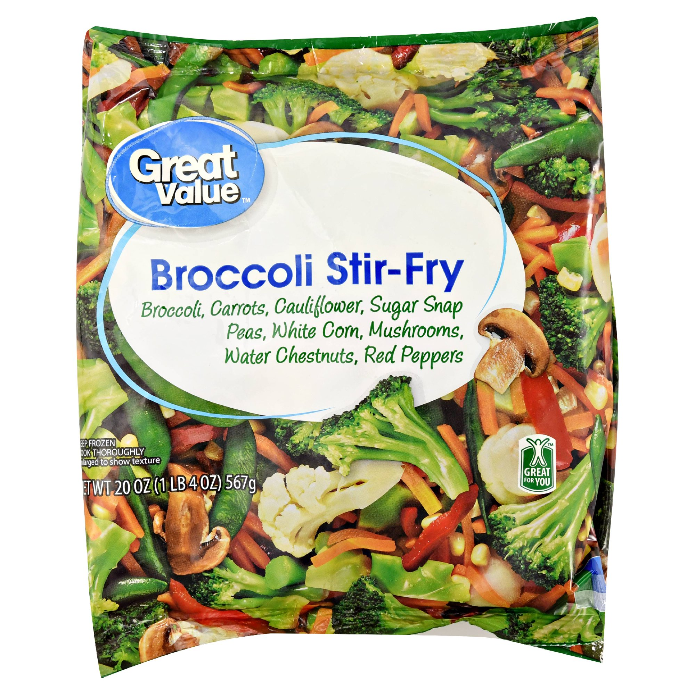

Veggie Stir Fry

Gotta get your greens somehow!
Quick and easy!
Great nutritional value!
Ingredients and Suggested Materials
- 1 bag of generic frozen mixed vegetables
- 1 tablespoon of some kind of oil (preferably olive oil)
- 1 pan with lid
- 1 stirring utinsle(anything will do)
- That's really all you need
Assembly Instructions
WARNING: OK Y'ALL! This recipe actually involves turning on the stove so take the proper precautions and get the proper permissions before operating the stove
- Put the pan on the stove
- Pour tablespoon of oil in the pan
- Turn on stove to medium heat and allow a few minutes for the oil to heat up
- Open bag of vegetables and pour entire frozen contents into the pan
- Cover pan quickly after pouring vegetables. The ice on the vegetables will melt and drip water into the hot oil, initially causing violent, burning eruptions from the pan. Getting the lid on is your only hope
- Once the pops of oil have subsided, remove the lid carefully and use utinsle to stir the vegetables
- Continue stirring and cooking for 10 minutes or until done
- Enjoy!
Poverty Kitchen NEXT LEVEL Techniques
- Add hot sauce to the pan at any point while assembling to make this recipe spicy!
- Make it a healthy meal with a glass of water!
- Eat with rice to make it more filling!
SEE OTHER GREAT POVERTY KITCHEN RECIPIES!